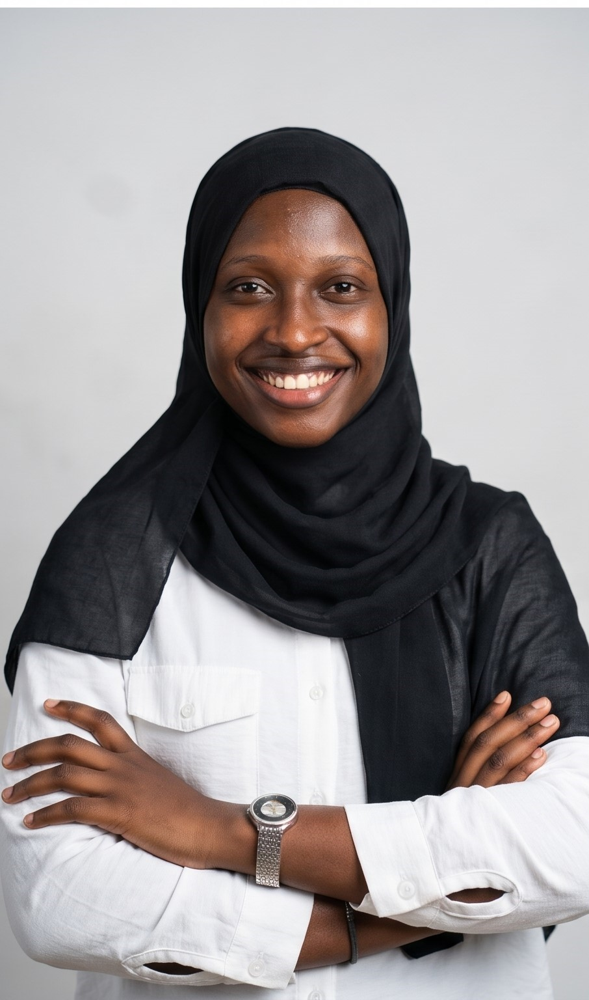
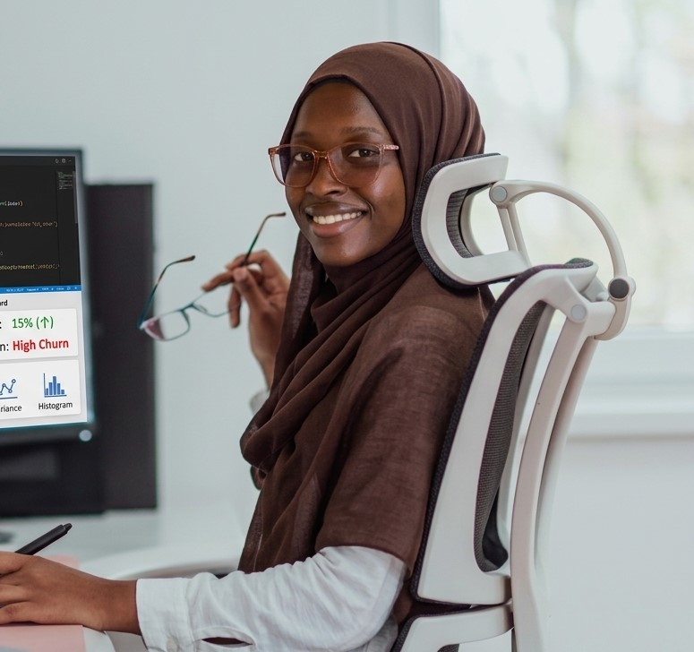
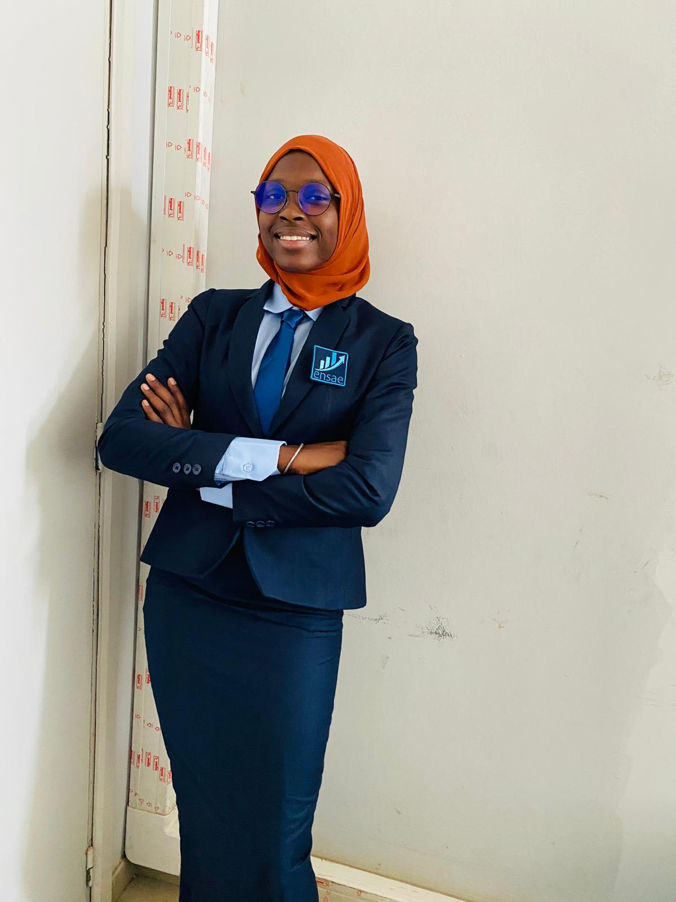

Ce qui me définit, 1 sur 4
Oser
Je dis oui avant de me sentir prête, puis je me donne les moyens d'y arriver.
Déplace la souris : la pelote te suit.
Data Analyst et statisticienne, en Master 1 Économétrie, Statistiques à Aix-Marseille Université. Milo te guide dans mon univers.
Commencer la visite
Data Analyst et statisticienne de formation, je cherche un stage de 3 mois à partir de mai 2027.
Je sais collecter et nettoyer des données, les analyser avec des méthodes statistiques et économétriques, les modéliser, puis les restituer en dashboard et en recommandations claires.
Habituée à coordonner des équipes, j'aime le travail en équipe et le contact avec les personnes qui utilisent les résultats.
Ce qui me définit, 1 sur 4
Je dis oui avant de me sentir prête, puis je me donne les moyens d'y arriver.
Ce qui me définit, 2 sur 4
Je rends les résultats clairs pour ceux qui n'ont pas le jargon, et j'aide les plus jeunes à progresser.
Ce qui me définit, 3 sur 4
Quand il me manque une compétence, je me forme. Un nouvel outil n'est jamais un obstacle.
Ce qui me définit, 4 sur 4
Je donne de mon temps aux collectifs que je dirige : le REBAR, la CFED, Ndajeem Ndimbaal.

Je collecte, je nettoie, je modélise, puis je restitue. Voici les outils que j'utilise pour le faire.
Mes atouts : relier la rigueur statistique à la clarté de la restitution, me former vite sur ce qui manque, et coordonner une équipe vers un livrable.
Fais défiler : tu parcours mon profil comme sur LinkedIn.
Milo descend vers ce qui me fait avancer.
Ma force principale
Je sais bien argumenter. Je persuade facilement, et je sais aussi dissuader : en général, je parviens à convaincre les personnes en face de moi.
Pourquoi c'est ma force. Une idée juste ne suffit pas : il faut la faire comprendre et la faire accepter. Savoir argumenter me permet de faire avancer une décision, de rallier une équipe et de défendre un choix de méthode.
Mon axe d'amélioration
Je travaille ma gestion du temps : savoir ce qui doit être fait maintenant, ce qui se planifie, et ce que je dois savoir lâcher.
Ma règle. Depuis notre dernière séance de cours, je me suis fixé une règle. Chaque lundi, je liste mes tâches de la semaine et je les classe avec deux questions : est-ce urgent ? est-ce important ? Je bloque ensuite des créneaux dans mon agenda pour ce qui est important.
Exemple : ma semaine du 23 au 27 novembre. Deux journées de cours de macroéconomie, un TD, le Career Day du vendredi à préparer, un projet de développement à rendre et des révisions pour les examens à venir.
En crème, mes cours et le Career Day. En orange, les créneaux que je bloque pour le reste.
Quand le stress est ponctuel
Quand le stress arrive d'un coup, avant un oral ou devant une échéance, je ralentis : j'inspire par le nez, je souffle longuement. Quelques respirations me redonnent la main.
Respire avec Milo : quand il se gonfle, inspire ; quand il se dégonfle, souffle.
Quand le stress dure
Quand le stress s'installe, je change d'échelle. Trois façons de me poser.
Stress qui dure
Elle me recentre : quelques minutes pour remettre les choses à leur place.
Stress qui dure
Je vais voir l'horizon. Le bruit des vagues me vide la tête.
Stress qui dure
Une tâche simple qui occupe l'esprit et fait retomber la tension. Essaie : flèches du clavier, ou glisse sur la grille.
Myriad, stage d'avril à septembre 2026. Projet de juin 2026, présenté sur place.
Fais défiler pour lire la suite.
Je suis Data Analyst. En juin 2026, lors de mon stage de fin de cycle chez Myriad, je travaille sur un projet pour le département support et ops : ses agents ont besoin d'un seul outil qui regroupe leurs sources d'information pour résoudre les incidents, avec des pistes de solution rapides.
Je conçois un assistant IA pour l'équipe support.
Enjeu : livrer une première version avant la date limite, accessible et utilisée fréquemment par les agents.
L'équipe l'utilise beaucoup et il lui fait gagner beaucoup de temps.
ANSD, août à octobre 2025. Estimation sur petits domaines, modèle de Fay-Herriot.
En août 2025, je suis stagiaire analyste statisticienne à l'ANSD, à la division de la méthodologie et de l'innovation.
Je pilote la mesure de la pauvreté multidimensionnelle au niveau départemental avec les méthodes SAE, plus précisément Fay-Herriot.
Enjeux : un temps restreint, une violation des hypothèses du modèle, et convaincre le jury.
Le jury m'attribue la meilleure note : 17/20.
REBAR, de septembre à décembre 2022. Cheffe de projet des navétanes culturelles.
De septembre à décembre 2022, je suis cheffe du projet « Vacances citoyenne », les navétanes culturelles du REBAR, à Bargny.
Je pilote un programme éducatif et citoyen qui offre aux jeunes de Bargny une alternative constructive aux activités estivales à risque, à travers des compétitions de culture générale et des actions communautaires.
Je contribue à l'éducation des jeunes, ce qui compte le plus pour moi.

Ce qui me plaît, c'est de transformer des chiffres en décisions : modéliser, estimer, prévoir. Je veux évoluer là où la rigueur statistique pèse directement sur le risque et sur la rentabilité.
La fintech rapproche la donnée du quotidien des gens : paiements, crédit, inclusion financière. J'y vois un terrain où l'on construit vite et où l'on mesure l'effet de ce que l'on fait.
Elle m'intéresse pour ses principes, comme le partage des risques et le lien avec l'économie réelle. J'aimerais comprendre comment ils se traduisent en produits que l'on peut mesurer.
Des personnes et des communautés qui m'ont orientée, conseillée ou ouvert des portes. Les coordonnées sont volontairement masquées.
| Contact | Lien avec moi | Organisation et rôle | Ce qu'il ou elle m'apporte | Coordonnées |
|---|---|---|---|---|
| Ibrahima Gueye | Cousin | Responsable à la Sonatel | Une porte d'entrée dans les télécoms. Je lui ai remis mon CV en août, sans suite pour l'instant : je prévois de le relancer. | +221 77 4•• •• •• |
| Réseau des alumni de l'ENSAE | Communauté | Anciens de l'ENSAE Dakar | Mises en relation et conseils de parcours : c'est par lui que j'ai rencontré Fatou Diop et Doudou Malick Faye. | annuaire réservé aux membres |
| Réseau des analystes statisticiens du RESA | Communauté | Analystes statisticiens | Échanges entre pairs, retours d'expérience et veille sur le métier. | groupe privé |
| Diariétou Sylla | Ancien manager | Data Engineer, Myriad | Regard technique sur mes projets, et une référence professionnelle. | +33 6 2• •• •• •• |
| Fatou Diop | Alumni de l'ENSAE | Statisticienne, ANSD | M'a mise en relation avec M. Kamara pour mon sujet de mémoire, qui touchait aussi son domaine d'expertise. | +221 76 3•• •• •• |
| M. Kamara | Expert de mon sujet de stage | Chef de division, direction des statistiques sociales, ANSD | Expert de la pauvreté multidimensionnelle. M'a orientée vers le Dr Balde. | +221 77 6•• •• •• |
| Dr Balde | Enseignant | Directeur des études et des stages, ENSAE ; spécialiste des petits domaines | Une expertise de référence sur l'estimation sur petits domaines, au cœur de mon projet. | +221 78 1•• •• •• |
| Doudou Malick Faye | Alumni de l'ENSAE | Data scientist | Pour mon mémoire de 3e année, m'a orientée vers Mamadou Diop. | +221 70 5•• •• •• |
| Mamadou Diop | Ancien de l'ENSAE | Ingénieur statisticien économiste, Head of Steering and Performance, Mixx by YAS ; certifié monnaie digitale | A répondu à mes interrogations et à mes inquiétudes pour mon mémoire. | +221 77 9•• •• •• |
Quatre objectifs, un par un.
Pour un stage, une alternance ou simplement échanger sur mes projets.
Les neuf éléments demandés dans le cours, avec la réponse en une ligne et le lien pour la retrouver.